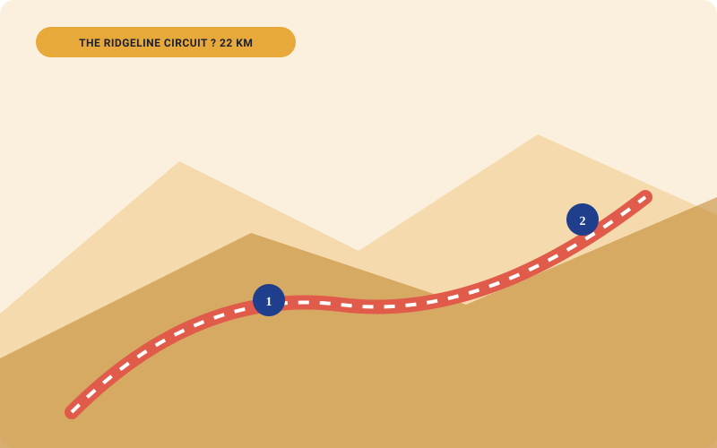
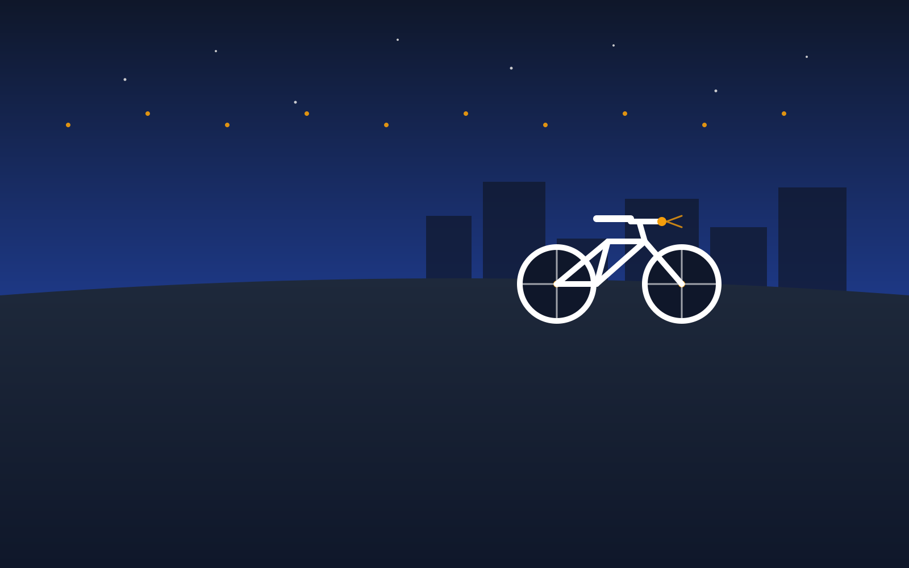
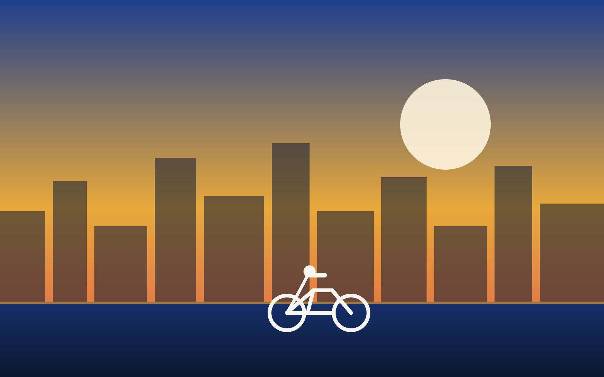

The Ridgeline Circuit
A longer route with a climb to the overlook and a fast return along the river.
.00 / group (1?6 riders)
Bicycles, helmets, guide, fitting & briefing included. No deposit required.
Reserve The Ridgeline CircuitRoute Itinerary
Tour highlights & elevation stops
Harbor Terrace Departure
Departure from Harbor Terrace Hub at 08:30 UTC.
Overlook Climb
Ascend the ridge road (hybrid or electric bike recommended).
Panorama Lookout Stop
15-minute rest stop for photographs and panoramic views.
Riverside Descent
Fast, exhilarating return leg along dedicated river trails.
Difficulty & Fitness
Moderate elevation climb
22km total distance with 140m elevation gain. Riders should have basic cycling fitness or select The Ascent electric bicycle option.

Inclusions
What is included in the group rate
Hybrid/Electric Bikes
Fitted Crosscut or Ascent bikes for up to 6 riders.
Helmets
Sanitized helmets fitted prior to departure.
Lead Guide
Expert guide providing route safety & navigation.
Fitting & Briefing
15-min pre-ride briefing on hill descent control.
Exclusions
Food & drinks excluded
Food and drinks are excluded. Bring at least 1 litre of water and energy snacks for the 4-hour climb and ride.
Schedule
Departure times & hub
Departure Hub: Harbor Terrace Hub (Harbor District)
Departure Times: 08:30 UTC daily
Arrival Requirement: Arrive by 08:15 UTC (15 mins early)
Group Pricing
Flat per group (1 to 6 riders)
Group rate covers up to 6 riders total. Zero bicycle deposit collected for guided tours.
Viewpoint Highlight
The Ridgeline Overlook
The highest point on the tour route, offering a 360-degree view of the harbor and mountain backdrop.

Preparation
What to bring for the circuit
Hydration Pack
At least 1L water recommended per rider.
Layered Clothing
Wind-resistant jacket for the ridge descent.
Energy Snacks
Energy bars or fruit for the mid-ride break.
Reserve The Ridgeline Circuit
Save a tour booking to your personal planner in seconds.